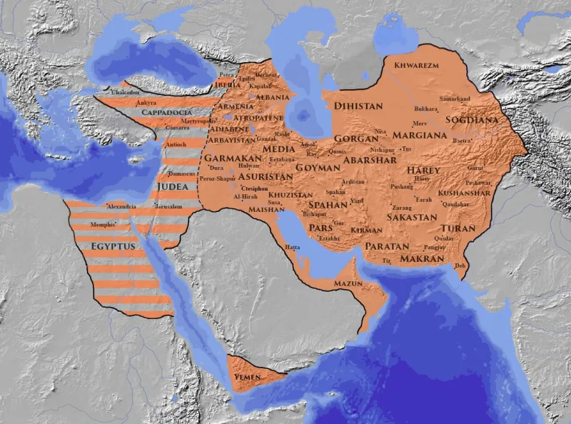
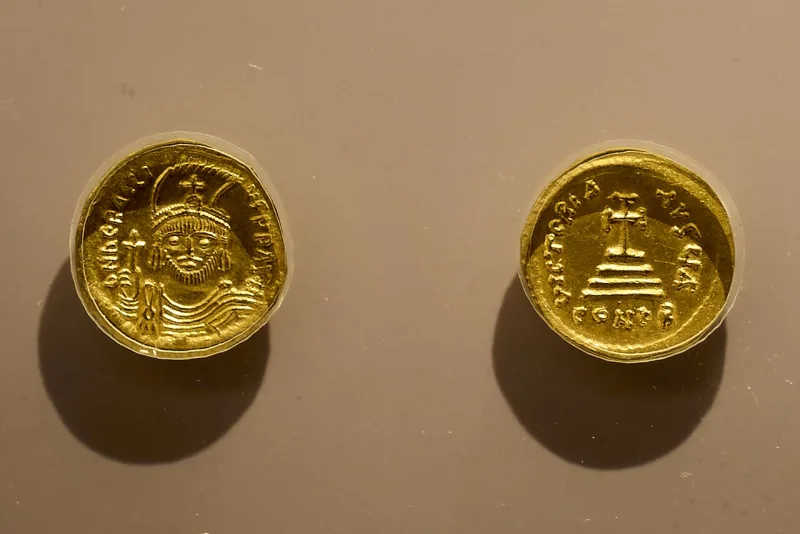

'Signs are only with Allah' — Muhammad declined
ContestedMuslim scholars have a real answer here. Say so before your friend does.
The test in the Bible
Deuteronomy 18:21-22 gives a public test for a prophet. What he predicts must happen.
Isaiah 41:21-23 sets the same standard for God himself. Jesus points to his works as evidence (John 10:37-38).
What the Quran says about signs
The Quran repeatedly has Muhammad decline to produce signs. "Why has a sign not been sent down to him?
Say: signs are only with Allah, and I am only a clear warner" (Quran 29:50). Quran 13:7 and 17:90-93 say the same.
Public miracles appear mainly in later hadith, which sits oddly beside this.
The one predictive passage
Quran 30:2-4 says the Romans have been defeated but will be victorious within three to nine years. Three problems are raised.
In the early undotted script the words could be read the other way round. The window is elastic.
And on standard dating — Jerusalem falls in 614, final victory in 628 — the fulfilment lands outside nine years.
The Muslim answer, at full strength
About Islam and Ibn Kathir answer well. When the verse came, Byzantium was flat on its back, so predicting its victory was humanly absurd.
It happened: Heraclius turned the war around between 622 and 628. Abu Bakr publicly wagered on it (Jami at-Tirmidhi 3194), which shows the reading was fixed from the start.
The passage also says believers would rejoice at the same time, fulfilled at Badr. On signs, the Quran refuses signs on demand to hostile testers, not miracles as such.
Its own inimitability is the standing miracle (2:23), and the splitting of the moon is in 54:1-2.
How strong is this argument?
Genuinely arguable, so do not overstate. The Rome passage is a real prediction on any dating, and Abu Bakr's wager is early evidence.
But it survives only in its vaguest form, and one elastic reversal cannot carry the weight Deuteronomy 18 places on detail — compare Isaiah naming Cyrus. The signs question is likewise split: the Quran's own posture and the later miracle hadith pull apart.
What to say
"The Quran says he was a warner, not a worker of signs. Why do the later books add so many?"



How they answer this — at its strongest
They say the Rome verse came true, and signs were refused only to hostile testers.
About Islam and Ibn Kathir answer on both points. When the Rome verse came, Byzantium lay flat on its back. Predicting its victory was humanly absurd. And it happened: Heraclius turned the war around between 622 and 628.
Abu Bakr's public wager (Jami at-Tirmidhi 3194) shows that Rome will win was the reading from the start, and the agreed recitation fixes it. The same passage adds that the believers would rejoice at the same time, which came true at Badr.
On signs, the Quran refuses signs on demand to hostile testers. It does not deny miracles as such. The Quran's own unmatchable quality, in the challenge of 2:23 that no one has met, is the standing miracle. And the splitting of the moon is in 54:1-2 itself.
The verdict
Open both ways: the Rome verse does predict, but only in its vaguest form.
The Rome passage is a real prediction before the event, on any dating. So no prophecy at all overstates the case, and Abu Bakr's wager is early evidence for the standard reading.
But it survives as prophecy only in its vaguest form. The rival reading in the dotless script is real. The three-to-nine-year window fits only with kind date choices. And one loose reversal cannot carry the weight Deuteronomy 18 places on detailed prediction that could fail. Compare Isaiah naming Cyrus.
The signs question splits the same way. The Quran's own stance, a warner without signs, is clear in the text. It sits in real tension with the later hadith, which pile up wonders the Quran never claims.
Sources
- Answering Islam — Muhammad's False Prophecies
- About Islam — Fulfilled Prophecy of Surat Ar-Rum (Muslim case)
- Answering Islam — Muhammad and Miracles